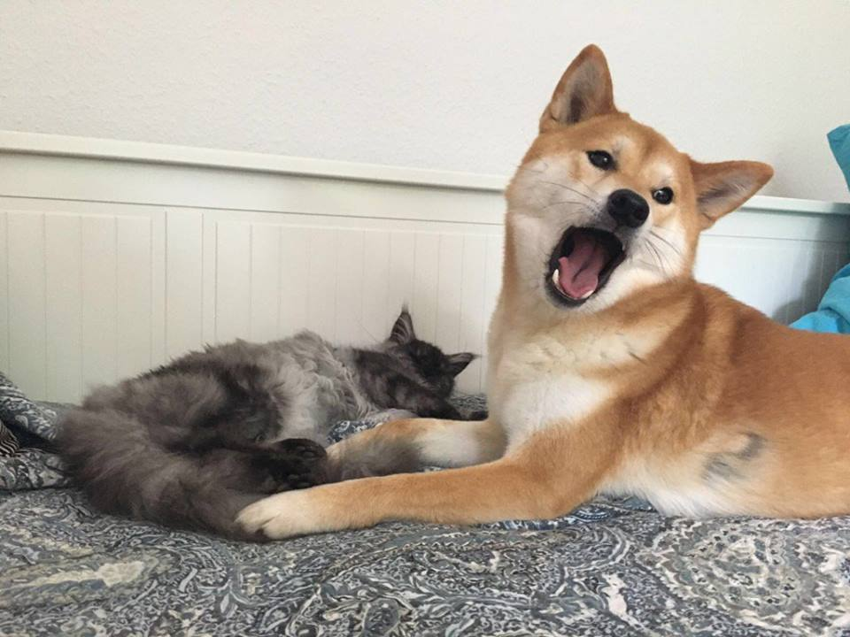
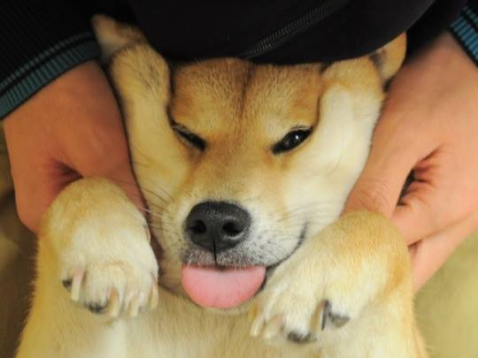

This is the story of SEMANTICS.
this stuff really does matter!
For the 2nd time, it matters!
Kinda like O2 if you like breathing
Five syllables here
seven more syllables there
are you happy now??
I like my doge.
Doge no like Kate, I don't like Kate
THING DOGE LIKE
what is this big bone and ball you speak of doge?
what quote inspires doge
A dog will teach you unconditional love. If you can have that in your life things won't be too bad.
As Doge once said, I ROOOVE WOOOO!
DWA is taking over the block.
Who Let the Doges Out by Doge may be one of the greatest songs of all time
By definition a song is a sound like perks up doge's ears
If you must contact doge
111 Doge House, Missoula
Sometimes doge think doge is funnest bestest doge there really is.
For a limited time only you can walk the doge and only pay doge
$1000
special: $995
For more inquiries on walking doge please visit
TUFA Climbing (DOGE HAUS)  